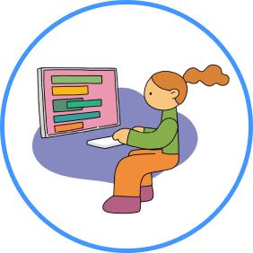
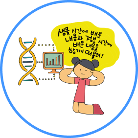
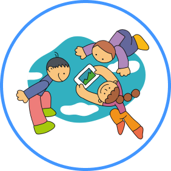
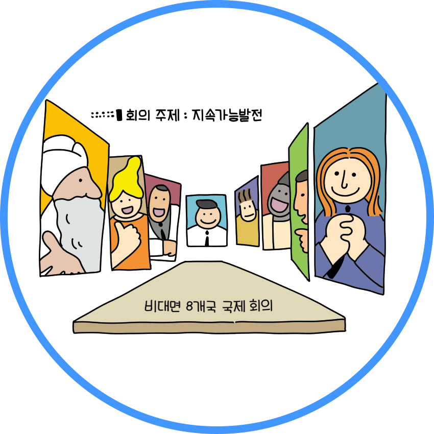

개념 학습
디지털 사회에서 갖춰야 할 역량
디지털 사회에서는 디지털 기술과 콘텐츠를 비판적으로 해석하고 올바르게 활용할 줄 아는 디지털 문해력이 기본 역량이 될 것이다. 우리는 사회 변화에 따라 진로를 설계하고 자신에게 필요한 역량을 길러 자신만의 강점을 키워 나가야 한다.
디지털 사회에서 갖춰야 할 역량
지식 정보 처리
합리적으로 문제를 해결하기 위해 다양한 분야의 지식과 정보를 깊이 있게 이해하고, 비판적으로 탐구하며 활용하는 능력과 인공지능 기술을 이해하고 활용하는 능력

컴퓨팅 사고
빠르고 정확하게 데이터를 처리할 수 있는 컴퓨터를 사용하여 일상생활 및 다양한 학문 분야의 문제를 발견 및 분석하고 해결 방법을 제시하는 능력

창의적 사고
폭넓은 기초 지식을 토대로 관심 있는 전문 분야의 지식, 기술, 경험을 융합하여 새로운 것을 만들어 내는 능력

협력적 소통
다른 사람의 관점을 존중하고 경청하며 자신의 생각과 감정을 효과적으로 표현하여 서로 협력하는 관계를 맺고 공동의 목적을 구현하는 능력

공동체 역량
내가 속한 지역 · 국가 · 세계 공동체를 이해하고, 공동체의 구성원으로서 지속가능한 인류 공동체 발전에 적극적이고 책임감 있게 참여하는 능력